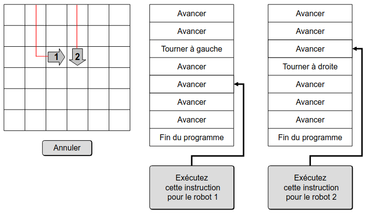
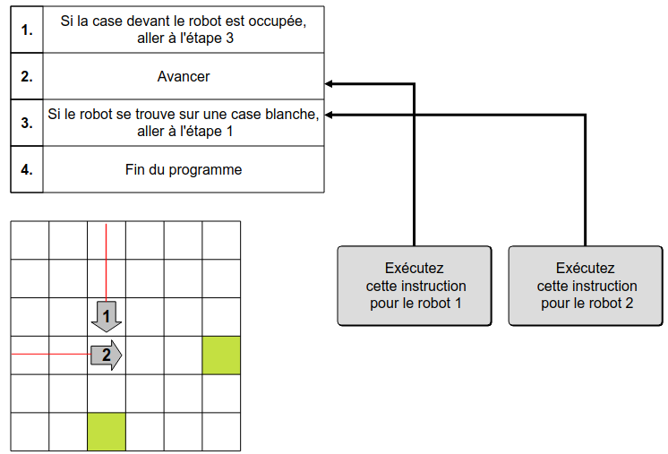

Solution
La collision entre le robot 1 et le robot 2 ne peut avoir lieu que sur l'intersection de leurs trajectoires.

On commence donc par faire avancer le robot 2 jusqu'à ce point de collision. Puis on fait avancer le robot 1 jusqu'à ce qu'il s'écrase dans le robot 2.

En résumé, pour résoudre le sujet, il faut cliquer successivement sur les boutons : 2, 2, 1, 1, 1, 1, 1.
Si on amène d'abord le robot 2 jusqu'au point de collision des deux robots, puis qu'on avance le robot 1, alors celui-ci va se retrouver bloqué devant le robot 2 et refusera d'avancer. En effet, l'instruction à l'étape 1 indique que s'il y a un robot devant il faut aller à l'étape 3, et l'exécution de l'étape 3 ramène à l'étape 1.

Il faut donc procéder autrement. On amène d'abord le robot 1 jusqu'au point de collision. On exécute l'instruction de l'étape 1 à un moment où le robot 1 n'a rien devant lui. Ainsi, le robot 1 est prêt à exécuter l'étape 2, qui consiste à avancer sans se poser de questions.

On peut alors amener le robot 2 au point de collision, puis exécuter une étape pour le robot 1 afin de le faire avancer sur le robot 2.

En résumé, pour résoudre le sujet, il faut cliquer successivement sur les boutons : 1, 1, 1, 1, 1, 1, 1, 2, 2, 2, 2, 2, 1.
Pour coincer les robots, il faut mettre tous les robots dans une position où ils ne sont plus qu'à une seule case de la position dans laquelle il vont se retrouver coincés les uns par les autres, et mettre tous leurs programmes à l'étape 2.
En exécutant le bon nombre d'étapes indépendamment pour chaque robot, on peut atteindre cette situation :

À partir de là, il ne reste plus qu'à exécuter une étape pour chaque robot, et ils se retrouvent tous coincés.

En résumé, pour résoudre le sujet, il faut cliquer successivement sur les boutons : 1, 1, 1, 1, 2, 3, 3, 3, 3, 4, 4, 4, 4, 4, 4, 4, 1, 2, 3, 4.
C'est de l'informatique !